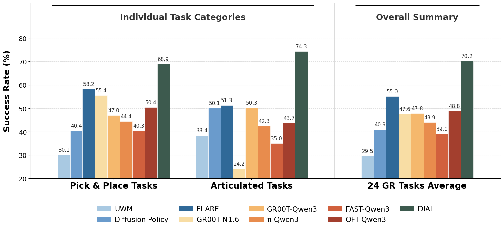

Simulation benchmark results
We evaluate DIAL on the RoboCasa GR1 Tabletop benchmark, which spans 24 tasks across two categories: Pick & Place (18 tasks) and Articulated Tasks (6 tasks involving cabinets, drawers, and microwaves). With full training data (1,000 trajectories per task), DIAL achieves 70.2% average success rate, substantially outperforming the strongest prior method FLARE (55.0%) and advanced VLA architectures such as GR00T-N1.6 (47.6%).

We show some example rollouts from the simulation benchmark below. DIAL handles both object rearrangement and articulated fixture manipulation.
Perhaps more striking is DIAL’s sample efficiency. Under a strict few-shot setting with only 100 trajectories per task (10% of the full data), DIAL reaches 58.3%—surpassing FLARE’s 55.0% achieved with 10× more data. Systematic ablations reveal three essential design choices behind this efficiency:
World modeling matters. Without explicit world modeling, even a fine-tuned VLA baseline (GR00T-Qwen2.5-FT) reaches only 30.6%. Adding predictive foresight objectives lifts all variants well above this ceiling, confirming that grounding the VLM in future physical states is a prerequisite for strong performance.
The bottleneck is critical. Simply adding world modeling is not enough if the coupling is loose. Variants that concatenate predicted future tokens as auxiliary context (SEER-style, 49.6%) or use foresight only as a training-time regularizer (FLARE-style, 51.9%) all plateau below 52%. DIAL’s structural bottleneck, where System-1 must derive actions by bridging current and predicted future states, reaches 58.3%.
Shared latent space is key. Replacing the VLM’s native ViT features with DINO-v2 as the prediction target drops performance from 58.3% to 47.2%. Even though DINO features carry strong geometric priors, the cross-manifold misalignment between reasoning and control undermines intent transfer. Both systems must operate in the same feature space.